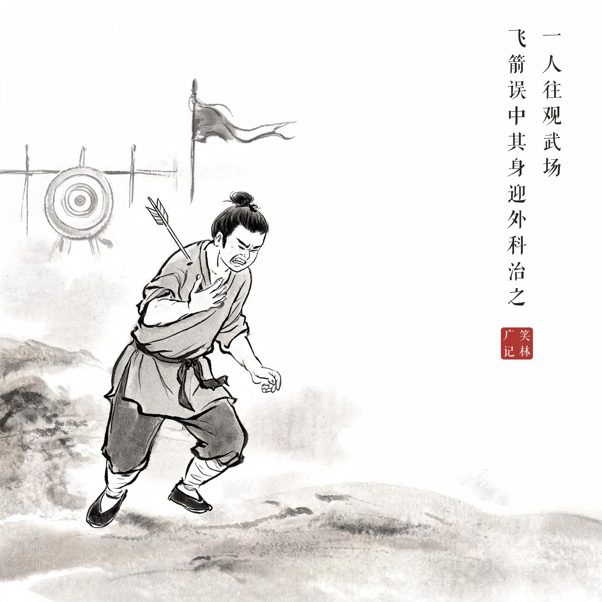
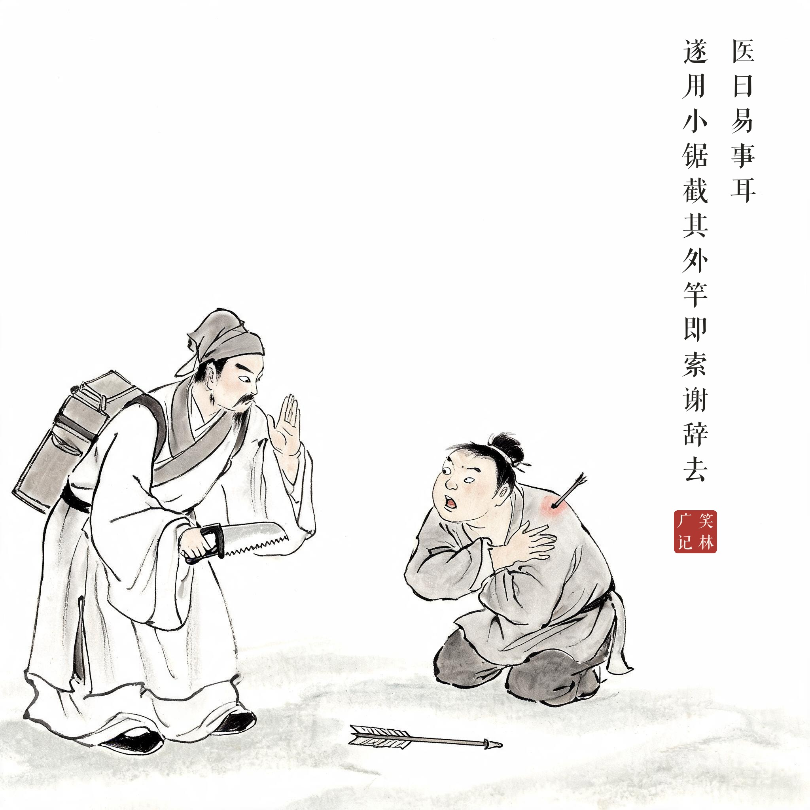

笑林广记 · 笑话组画
14 锯箭竿
系列：笑林广记 · 水墨笑话组画 | 3 幕 | 2K（2048×2048）| aicloud-seedream / 每幕题款＝该幕原文（清刻本悦宋合成，无标点），合幕覆盖全文 | 印章：笑林广记

其01 · 飞箭中身一人往观武场 / 飞箭误中其身迎外科治之
演武场上飞箭误中其身，痛得直跳脚

其02 · 截其外竿医曰易事耳 / 遂用小锯截其外竿即索谢辞去
医生小锯锯断体外箭杆，扔箭拱手告辞
其03 · 内科的事问内截如何 / 答曰此是内科的事
医生背箱而去回头摆手，伤者揪袖急问
出处
《笑林广记 · 术业部》（[清]游戏主人纂集）
原文
一人往观武场，飞箭误中其身，迎外科治之。医曰："易事耳。"遂用小锯截其外竿，即索谢辞去。问："内截如何？"答曰："此是内科的事。"
白话
一个人去演武场看热闹，被飞来的箭误中了身子，请外科医生来治。医生说："小事一桩。"随即用小锯把露在体外的箭杆锯断，收了诊费就走。伤者问："扎在肉里的那半截怎么办？"医生答："那是内科的事。"
画意
外科只管锯掉看得见的部分，扎进肉里的归"内科"——敷衍塞责、各扫门前雪的千古经典，"头痛医头"的祖师爷。